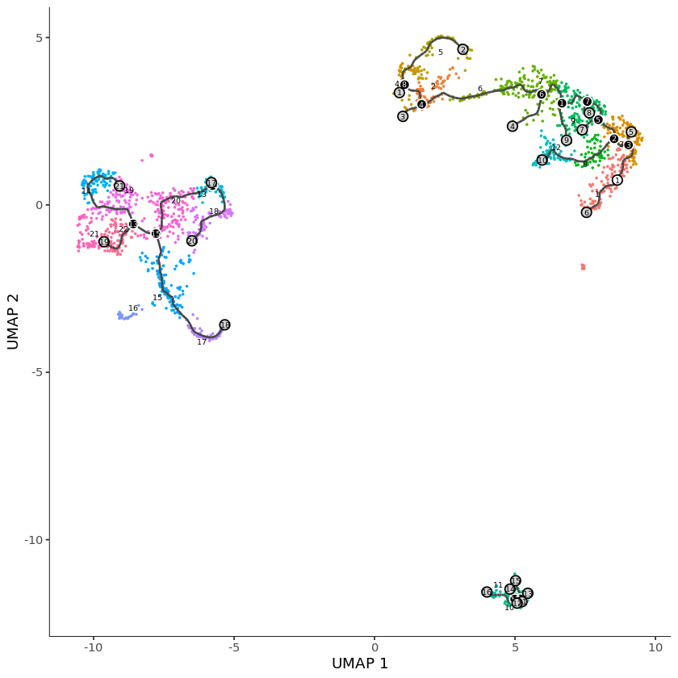

# Monocle >3 0 and tximport >1.13.0
library(tximport)
library(monocle3)
# path to the output directory of Alevin run of neurons_900 10x V2 data
files <- file.path("alevin_quants/alevin/quants_mat.gz")
file.exists(files)
TRUE
# Reading in the alevin quants quants
txi <- tximport(files, type="alevin")
"and we are good to go !! Cells after this has been taken from Monocle tutorial:
https://cole-trapnell-lab.github.io/monocle3/
Below lines are for example purposes only and could be suboptimal. We recommend
checking out Monocle tool for more detailed tutorial of the downstream analysis."
# converting the sparse matrix to dense for monocle parsing.
pbmc <- new_cell_data_set(as.matrix(txi$counts))
## Step 1: Normalize and pre-process the data
pbmc = preprocess_cds(pbmc, num_dim = 100)
## Step 2: Reduce the dimensions using UMAP
pbmc = reduce_dimension(pbmc)
## Step 3: Cluster the cells
pbmc <- cluster_cells(pbmc)
## Step 4: Learn a graph
pbmc <- learn_graph(pbmc)
## Step 5: Order cells
pbmc <- order_cells(pbmc, root_cells=pbmc$cell[[1]] )
plot_cells(pbmc)
